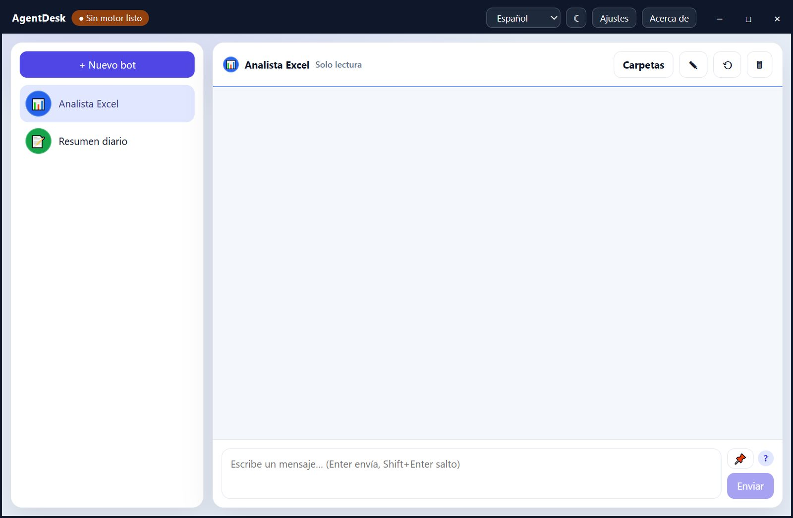
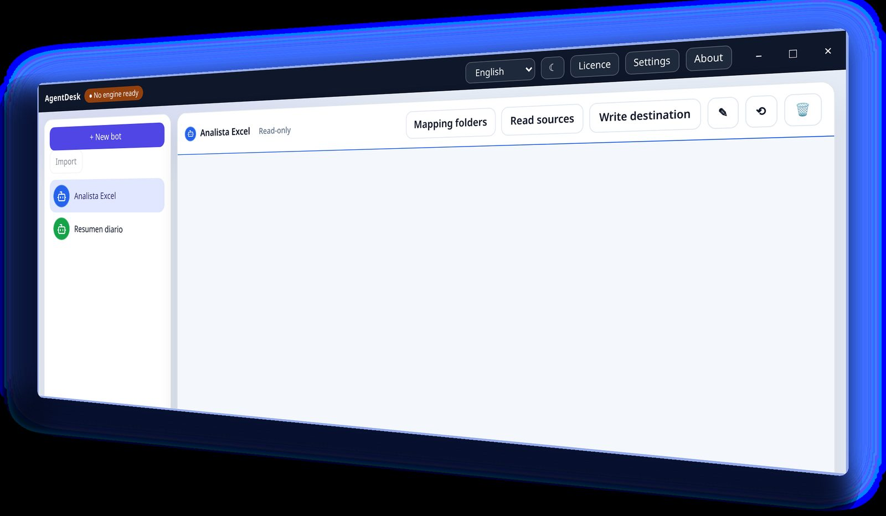
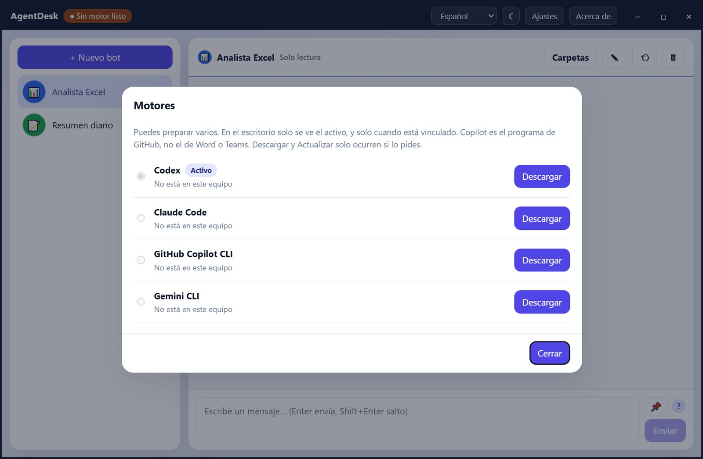

What can each agent read?
Swiss made
Agent desktop for Windows
Your work agents, on your own Windows desk.
AgentDesk is a Windows desktop for work agents. Each bot has its own name, brand, personality, memory and conversation. It runs on your PC: it is not a cloud service and not an OpenAI product. Made by Castellon.CH in Biel/Bienne, Switzerland.
Free edition · Windows · version 0.2.3 · portable zip. SHA-256
The application



The idea
Several agents on one PC, each with its own identity, memory and sources, and the work kept on your own computer. Free edition; Pro features require a licence. Interface in English, Spanish, German, French and Italian.
Where do memory and history live?
What leaves my PC?
How it works
1
On your Windows PC
Windows 10 (1809) or Windows 11, 64-bit. No admin rights and no .NET install.
2
Create your bots
Give each bot its name, colour, icon and the files or folders it may read.
3
Choose the engine
Free: Codex with your own ChatGPT account. Pro: CLI engines, an OpenAI-compatible API engine and Microsoft Copilot Studio.
Any local CLI engine acts with its own permissions and can modify files, for example after a malicious prompt. Its security depends on that provider and its configuration.
Key benefits
1
Bots with personality
Each bot has its own name, personality, colour and icon, and its own conversation.
2
Bots that consult each other
If you enable it, bots can consult one another.
3
Read sources
A file, a folder or a SharePoint library synced via OneDrive.
4
Does not modify files
Writing needs the separate “Write files” add-on, enabled explicitly.
5
Memory and history
Pinned memory and chat history for every bot.
6
Clone and export (Pro)
Clone a bot or export it. Light and dark themes.
Editions
Free edition. Pro features require a licence. Licences are annual, per PC, on request at info@castellon.ch.
| Free | Pro | Labs | |
|---|---|---|---|
| Chat and basic agents | ✓ | ✓ | ✓ |
| Codex with your own ChatGPT account | ✓ | ✓ | ✓ |
| Clone and export bots | — | ✓ | ✓ |
| Private agent | — | ✓ | ✓ |
| CLI engines | — | ✓ | ✓ |
| OpenAI-compatible API engine | — | ✓ | ✓ |
| Microsoft Copilot Studio | — | ✓ | ✓ |
| Map of your documents | — | — | ✓ |
| Shared reads | — | — | ✓ |
Pro and Labs CLI engines are Claude Code, GitHub Copilot CLI, Gemini CLI and Grok Build. They act with their own permissions.
Your data
Bots, memory and chat history stay on the PC, next to AgentDesk.exe. API keys stay in Windows Credential Manager. What leaves the PC is what AgentDesk sends to the engine you choose.
Requirements
Windows 10 (1809) or Windows 11, 64-bit. WebView2. No .NET install and no admin rights. Languages: English, Spanish, German, French and Italian.
Contact
Write to us for a Pro or Labs licence, or the “Write files” add-on.
Antonio Castellon · Castellon.CH
Swiss made
Biel/Bienne, Switzerland
Codex, ChatGPT, Claude Code, GitHub Copilot, Gemini, Grok and Microsoft Copilot Studio are trademarks of their respective owners. AgentDesk is not affiliated with, sponsored or endorsed by them.